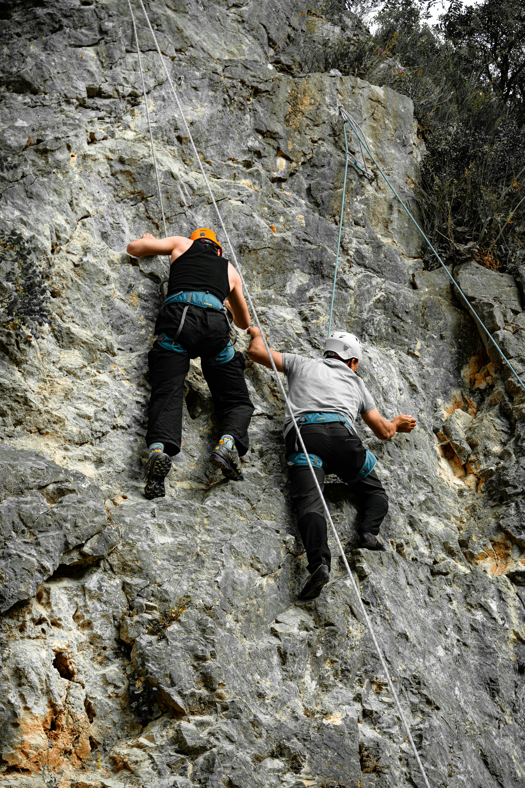
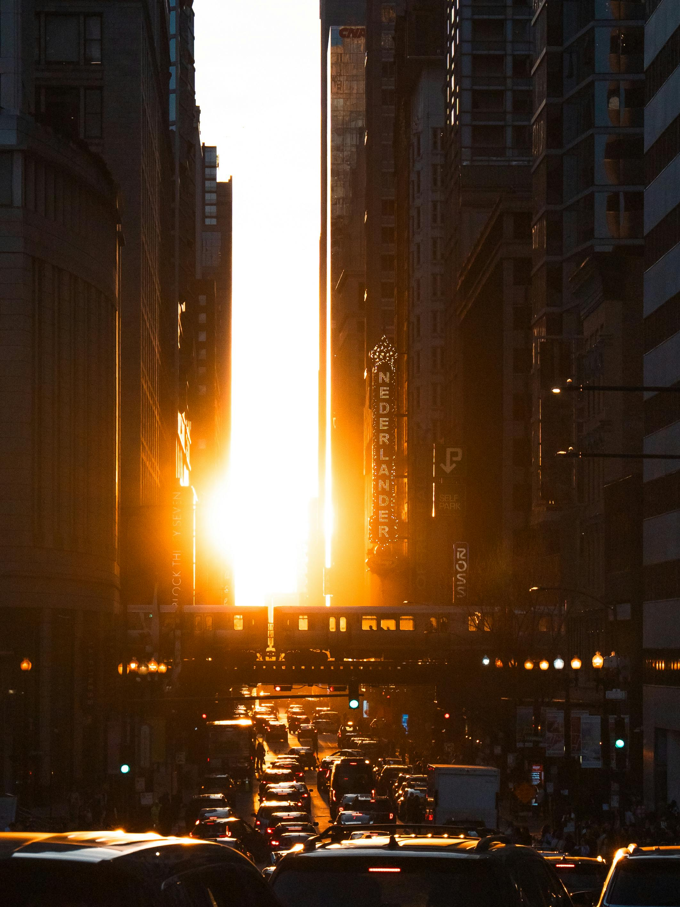

Re-Alignment
Restoring clarity, intention, and direction. Leaders reconnect with what truly matters, enabling faster alignment and clearer priorities.
Systemic reinvention for sustainable performance
Every organisation is founded with a core intention - a reason it exists, creates value, and attracts people. Over time, pressure and growth can pull organisations away from this intention. Strategy becomes reactive and decisions are driven by urgency rather than clarity.
We help organisations realign strategy, leadership, and execution with their highest potential - restoring momentum and performance.
Momentum is observable and measurable through indicators such as decision latency, escalation frequency, leadership stability, customer consistency, and organisational focus.
Restoring clarity, intention, and direction. Leaders reconnect with what truly matters, enabling faster alignment and clearer priorities.
Seeing how the system actually operates beneath the surface. Root causes are revealed, ownership becomes clear, and recurring issues dissolve.
Leadership stability under pressure. Decision quality improves, friction decreases, engagement and retention rise, and margins strengthen.
Turning insight into aligned movement. Execution becomes coherent and growth becomes sustainable.

We develop leaders who move beyond control-driven and purely cognitive leadership into presence, systemic awareness, and strategic intuition — creating clarity, not noise, and momentum, not friction.
We help teams:

We support enterprise-wide reinvention by aligning strategy with highest intent, releasing patterns that no longer serve, and enabling organisations to evolve toward resilient, future-ready performance.
Transformation is not just a strategy, it’s a shift in consciousness. And when a company leads from that place, momentum and profit are a natural outcome not a forced one.